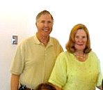
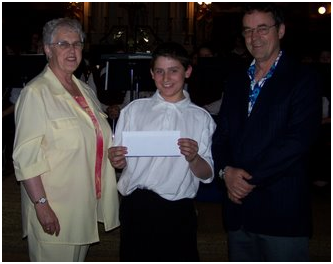
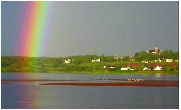

‘CONNECTING
PEOPLE WHO CARE WITH CAUSES THAT MATTER”

Ten
reasons people choose community foundations.
one
We
are a local
organization with
deep roots in the community, and part of a nationwide movement whose
support we build and share.
two
We
bring donors to the table as community
builders, working
closely with them to align their philanthropic vision with the
community’s needs.
three
We
identify long-term
needs and
opportunities and invest in solutions that let our communities guide
their own future.
four
We
take a broad and inclusive view of what a community is, and provide
grants to the widest
possible range of organizations and initiatives.
five
We
provide highly personal
and flexible service,
accepting a wide variety of assets and offering donors maximum tax
advantage.
six
We
build permanent funds
and those that can respond to immediate needs, helping our
communities ensure vital futures.
seven
We
multiply the impact
of gift dollars by pooling them with other gifts.
eight
We
believe that diversity is strength, so we bring
the entire community together
to stimulate new ideas, build participation and strengthen community
philanthropy.
nine
We
are transparent and
reputable stewards of
community resources, committed to being accountable, accessible and
responsive.
ten
We
build community
vitality – the
unique and essential spirit that flourishes when people believe
their community holds possibilities for everyone.



Community
Foundation
for
Eastern
Kings
When
you establish an Unrestricted
Fund,
your gift addresses a broad range of local needs – including
future needs that often cannot be anticipated at the time your gift
is made. We evaluate all aspects of community well-being: arts and
culture, economic development, education, environment, health and
social services, neighbourhood revitalization, and more. The
flexibility of your unrestricted gift enables your community
foundation’s local experts to respond to the community’s most
pressing needs, today and tomorrow.
SOURIS
FUND
This
endowment for the benefit of people in the Souris area was
established in 2007. The Fund, made possible by a contribution from
an anonymous donor has been invested as part of the Community
Foundation portfolio. Earnings may be used for grants in support of
any charitable activity in the Souris area. The Souris Fund is one
of forty three endowments administered by the Foundation for the
benefit of Islanders.
REAR
ADMIRAL LOUISE C. and JAMES E. WILMOT SCHOLARSHIP
Rear
Admiral Louise C. and James E Wilmot are citizens of the USA and
long-time summer residents of Fairfield, Prince Edward Island.
Wishing to contribute to the quality of life in their chosen
community, and with a particular interest in health care, Louise and
James Wilmot established scholarships for nurses in their area.
The
purpose of the Fund is to improve health care in the Souris area
through the provision of financial assistance to nurses in training
on condition that, after completing their training and obtaining
certification, they accept employment in the Souris Hospital for a
period equal to the period covered by the scholarship. The
introduction of this scholarship has sparked the interest of the
Souris Hospital Foundation that has agreed to match the scholarship.
Through the interest of the donors and with the help of the Souris
Hospital Foundation, scholarship for 2009 and 2010 have been
established for $2,000 per year for the last two years of study in
Nursing. .
Souris
& Area –
Undesignated Funds

SOURIS FUND
RECIPIENTS
2007
Souris
High School Band
2008
Harbourview
Training Centre
2009
Souris
4-H District Council – Dundas Exhibition
Rear
Admiral Louise C. and James E. Wilmot Scholarship
Recipient
2009
Melanie
Larkin
More
benefits
Funds
established at the Community Foundation must comply with the
regulations laid out by the Canada Revenue Agency. The only way
that funds can be disbursed by the Community Foundation is through a
charitable organization, educational institution or a municipality.
It
is through a fund such as the Souris Fund that that
area needs can be identified and assistance provided through
a grant as recommended by the organizing committee.
A
fund can easily be established to provide funding to assist in the
maintenance of a historic building or structure in the community.
The
investment and granting policy of the Community Foundation are
integrated and designed to provide a grant that grows with
inflation. All investment income is not granted as earned. A
portion of the investment income is added to the investment which in
normal times, allows the fund value to grow. The amount granted is
equal to 4% of the 4 year rolling average of the fund value.
Questions or
information on the Souris Fund can be directed to either Carol
Fraser (current CFPEI Director) or Margaret Ching (former CFPEI
Director).

Board
of Directors
John
Robinson
Tom
Davies
Joyce
Gaudet
Tracey
Laughlin
Norman
Carruthers
Heather
MacDonald
Donald
Glendenning
Lou
Ann Thomson
David
Anderson
Rogers
Bell
Steve
McQuaid
Carol
Fraser
The Community Foundation of Prince Edward Island is dedicated to
improving the quality of life for all Islanders. We are a local
organization with deep roots in the community, however we are part
of a nationwide network, one of 168 in Canada.
With the establishment and management of funds gifted in perpetuity,
The Foundation distributes the earnings for any charitable purpose
including human services, arts and culture, education, environment,
religion, and health and physical activity.
If you require information, feel free to contact any director or
contact us at:
The
Community Foundation of Prince Edward Island
Suite
105, Queen Square Center
119-121
Queen Street
Charlottetown,
PE CIA 4B3
Telephone:
(902) 892-3440; Fax:
(902)
892-0880
Email:
foundation@cfpe.ca
Web
site: www.cfpei.ca
Undesignated Funds